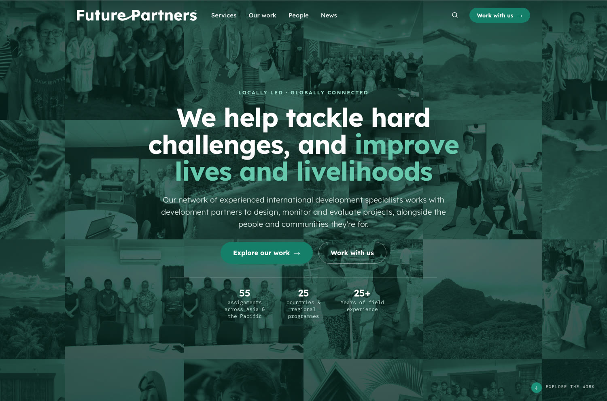
At a glance
What they needed
Their website hadn’t kept up with the work. The rebuild had three jobs: show how broad the network is, carry years of search history through the move, and leave the team able to run the site themselves.
What I did
I built an interactive atlas of the region, rebuilt the services, people and news sections, and moved the site onto a static build the client owns outright.
What changed
Launched at futurepartners.co.nz in August 2026, ahead of the November plan.
- 105pages shipped
- 39case studies migrated
- 29people profiled
Keeping the search history
The old site had years of Google standing, and every URL was about to change.
So the first week went on listing every page before touching anything. It’s not glamorous, but it had to come first.
The atlas
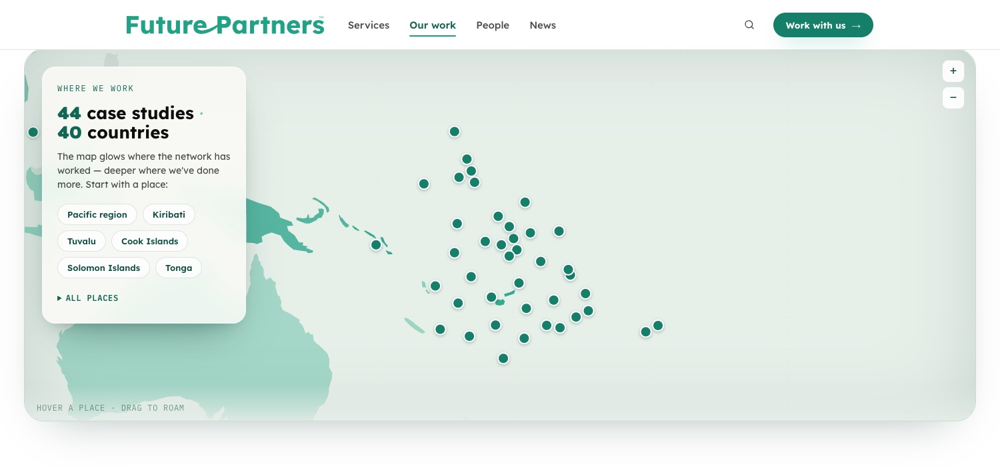
The centrepiece is an interactive atlas, a map of the region that glows where the network has worked, with every point opening into real case studies.
It took the longest, and should have. A map works easily on a desktop and awkwardly on a phone, where pinch and pan fight the page scroll.
The mobile version became its own piece of work: a full-screen view with proper touch gestures, tap-a-country navigation and a bottom sheet for reading case studies one-handed.
It went through more revisions than anything else on the site.
Working through feedback
The project ran in stages, reviewed with the client at each one: inventory first, then structure, then design, then content.
Copy corrections, pin legibility on the map, photo crops, links that needed a better home: each round of notes shipped within the week, and a few of the better details on the site started as the client’s margin notes.
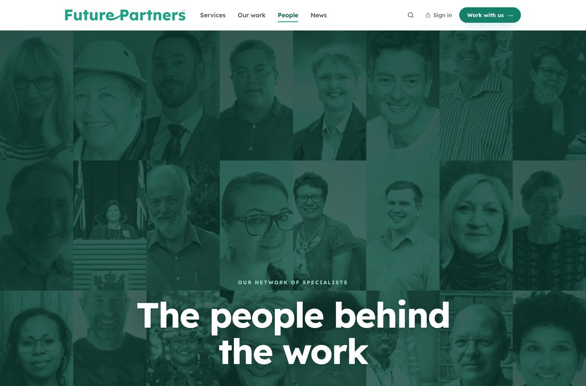
Before and after
Home
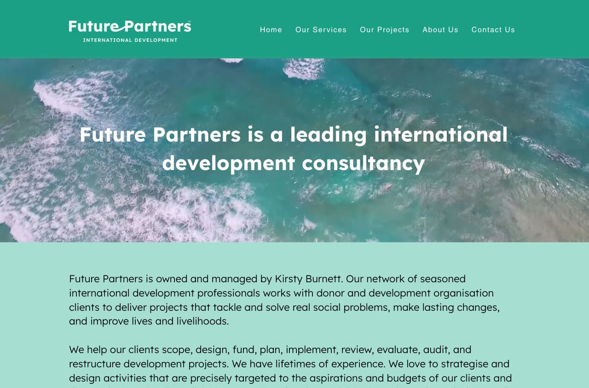
The work
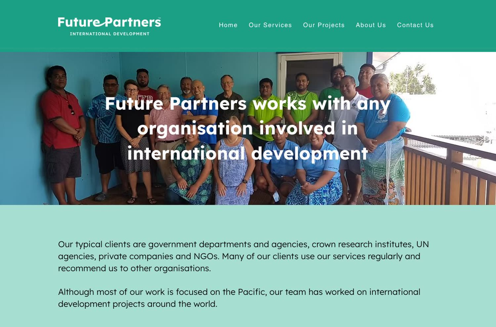
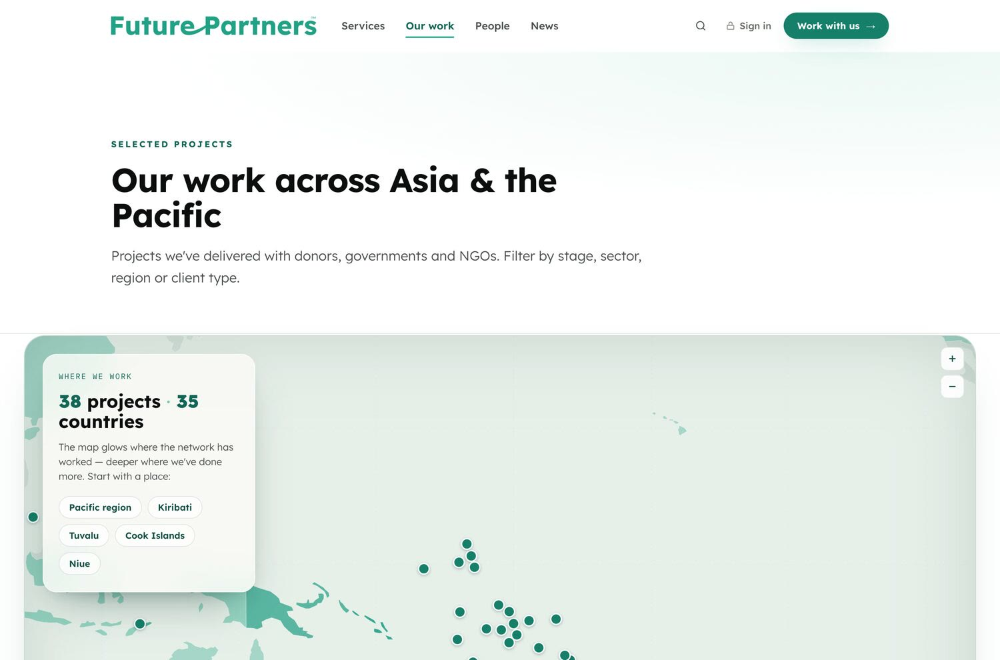
Services
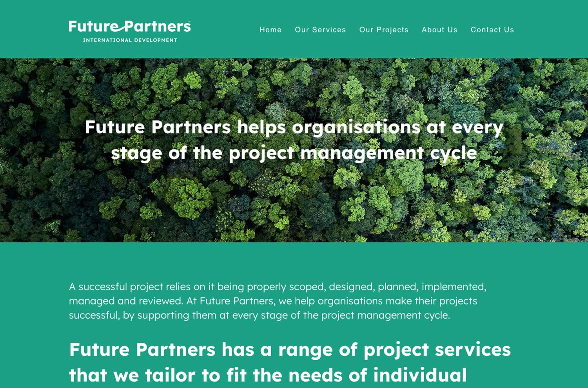
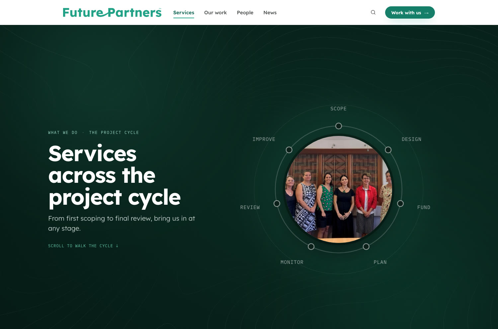
News
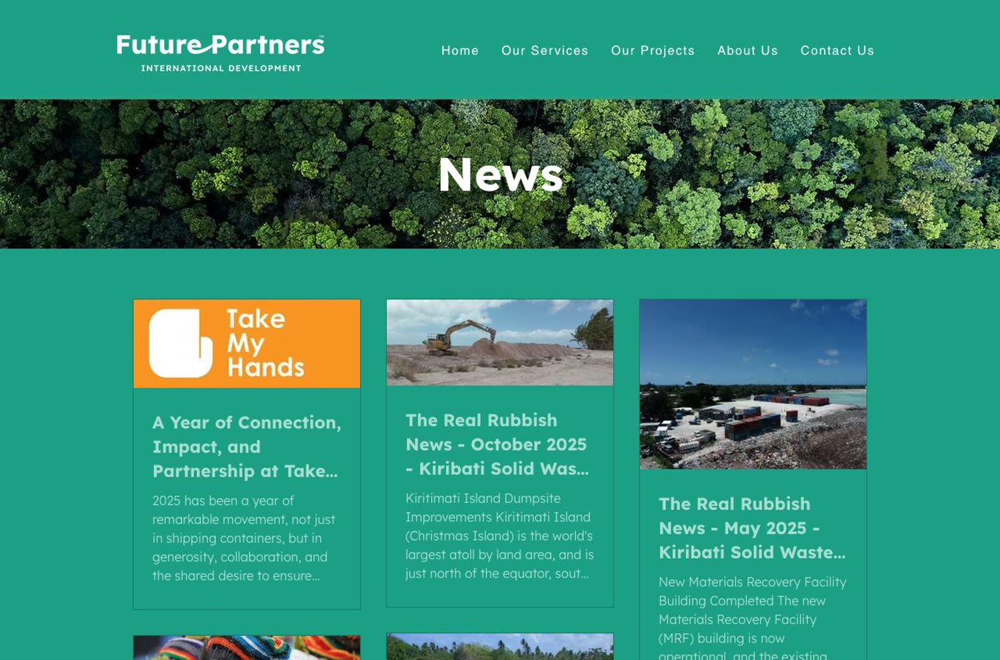
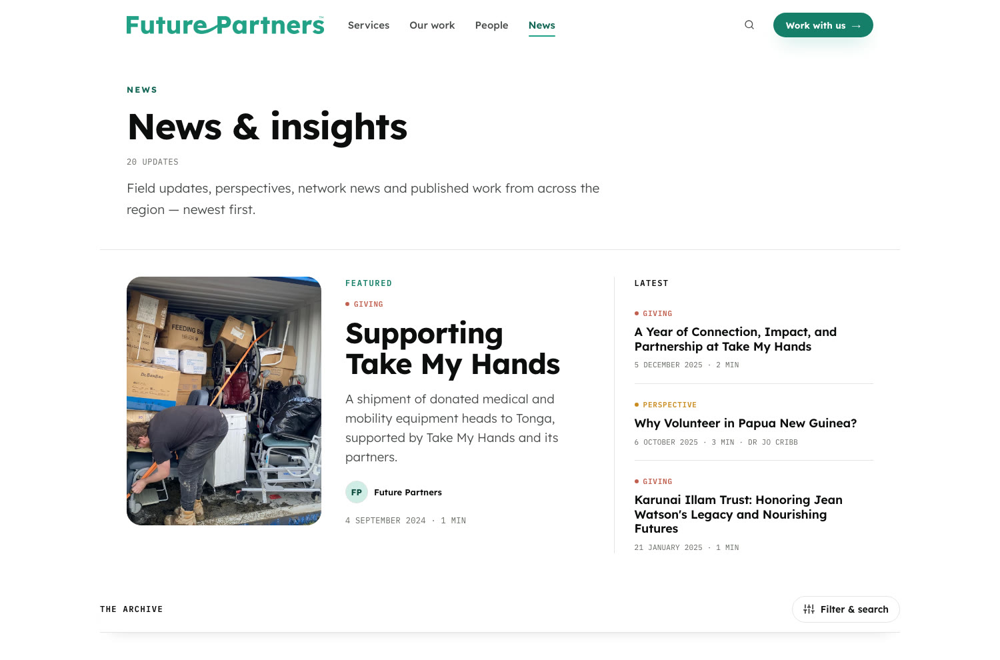
Drag the handle, or tab to it and use the arrow keys.
Running it themselves
The site is plain files in Future Partners’ own accounts: their code, their hosting, their domain. There’s no database behind it, which keeps the running costs and the security risk close to nothing.
The team edits case studies, profiles and news through an editing screen at its own address, with a plain-English handbook for everything else.
The next stage is already designed: a members’ area for the network’s associates, where documents come straight from the network’s own filing instead of being uploaded twice.
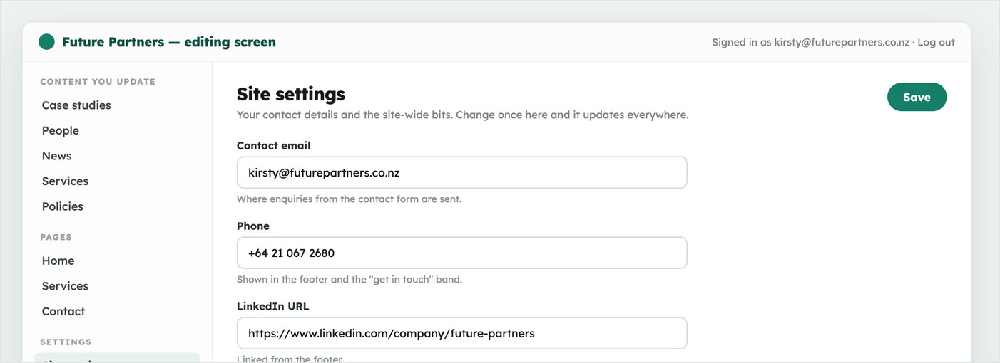
The result
Code, content, hosting and domain all sit in Future Partners’ name.
“His patient approach and clear advice make the process easy and saves time in the long run.”
Want something like this?
Book a call